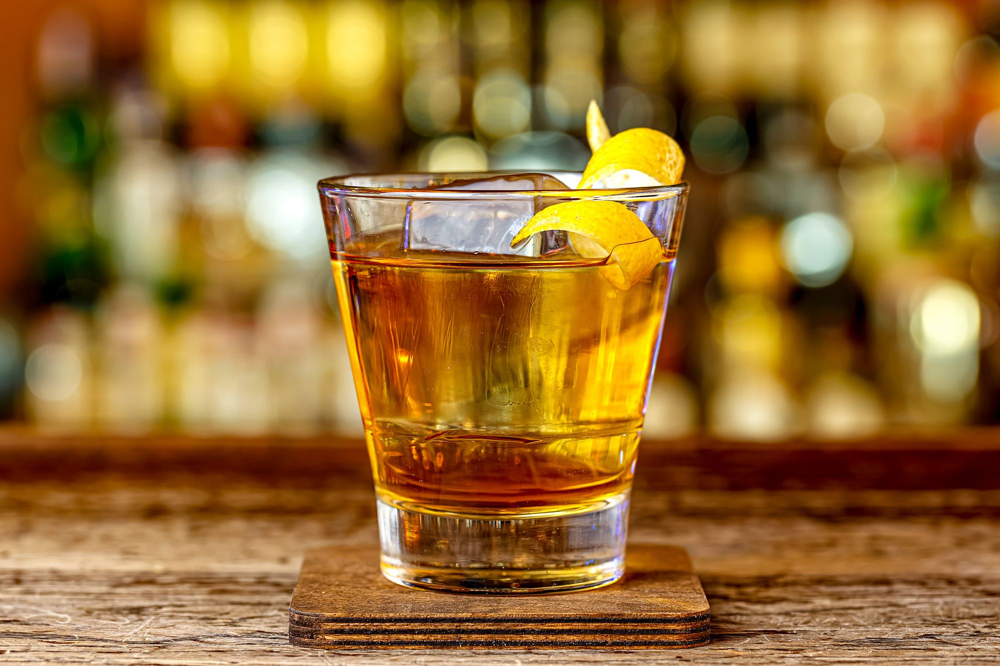

Mauby

Description
Mauby was traditionally sold by vendors who walked around the towns & villages dispensing the delicious drink from buckets expertly balanced on their heads.
Today mauby is on the menu at many local cafes and even at the Chefette chain of fast food restaurants.
Ingredients
- 1/2 cup mauby bark
- 1 stick cinnamon
- Var orange peel
- Var nutmeg
- Var cloves
- 1 litre water
- 3 cups brown sugar
Var refers to vary based on desired taste
Steps
- Wash and clean the mauby bark before use
- Add ingredients into a pot
- Heat pot over medium-high heat
- Boil pot for about 10 - 15 min
- Remove pot from heat to steep
- You may steep from an hour, even up to overnight
- Taste the syrup before straining and if required add a bit more bark and boil for an additional 5 mins.
- When ready, strain liquid into a container for storage
- This liquid is your mauby concentrate
- Mix concentrate, water, and sugar to taste